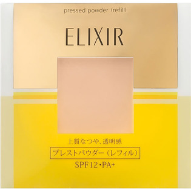
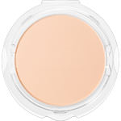

返回列表
产品名称：エリクシール シュペリエル プレストパウダー（レフィル）

資生堂 エリクシール シュペリエル プレストパウダー（レフィル） －
メーカー 資生堂
JANコード 4901872365890
商品の特徴
上質なつや、透明感
ＳＰＦ１２・ＰＡ＋
- 成分・分量
- 【成分】
タルク、ポリメタクリル酸メチル、メトキシケイヒ酸エチルヘキシル、トリエチルヘキサノイン、ステアリン酸Ｃａ、ポリエチレン、（ビニルジメチコン／メチコンシルセスキオキサン）クロスポリマー、ジメチルシリル化シリカ、酢酸トコフェロール、水溶性コラーゲン、ヒアルロン酸Ｎａ、加水分解エラスチン、ワセリン、水酸化Ａｌ、ジステアリン酸Ａｌ、シリカ、エチルヘキシルグリセリン、ケイ酸（Ｎａ／Ｍｇ）、グリセリン、クエン酸、リン酸Ｎａ、トコフェロール、水、酸化スズ、ＢＨＴ、ミリスチン酸Ｍｇ、アルミナ、ＢＧ、フェノキシエタノール、マイカ、酸化亜鉛、酸化チタン、合成金雲母、酸化鉄、硫酸Ｂａ
- 用法及び用量
- 【使用方法】
・ファンデーションの仕上げや化粧直しにお使いください。
・パフに適量をとり、肌に軽くのせるように顔全体につけたあと、パフをすべらせるようにしてなじませます。
・入れ替え用には、別売りの「エリクシールシュペリエルプレストパウダー（レフィル）」があります。